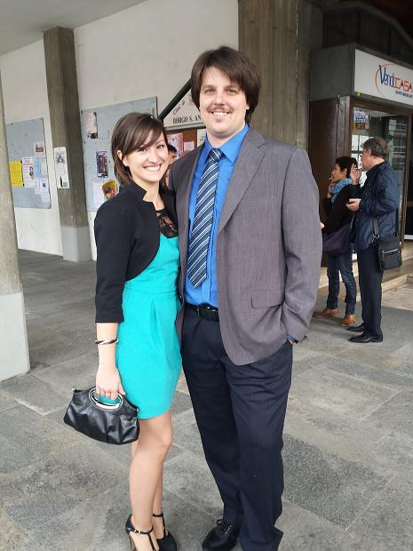
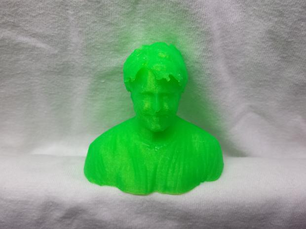
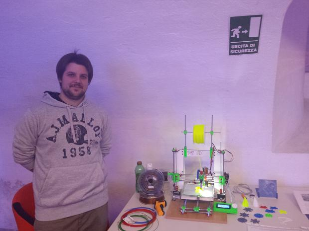

About Me

I'm an italian 27 years old boy (I was born in 1988). Since I was young I loved to construct things, explore, see how things are made and also smash them... The fist time I fix correctly something was at 12 years old: I pull apart all of the pieces of a videorecorder (VHS style) and then reassemble it... then he restart to work (magically.. because I didn't use all of the original pieces...!).
Growing up I start to make something with the electronic, very basic circuit involving led, resistor, capacitor, and so on.
After high school I choose to study electrical engineering (with some robotics involved) at the university, so my laboratory start to grow in dimension and number of different stuff you can find inside. I slso invaded the basement room of my uncle.
2 years ago I build my fisrt 3D printer, but it was only the first...
In my life I have practiced a lot of hobby like build rc cars, rc planes, drones, fixing all the fixable, and more.
Here you can see some of my pictures and works


Where you can find me!